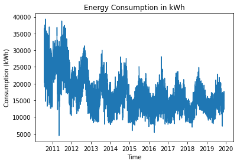

This page is not interactive and is used to show what the "visualisation page" of the final product could look like (without styling)
Data:
- Title: The National Archives - Energy Consumption
- Published by: The National Archives
- Date Created: 22 July 2010
- Last Modified: 22 July 2010
- Licence: Open Government Licence
- Data Type: CSV
The recommended visualisation method is: Line Graph
Change visualisation method to:

Current Parameters:
- X Axis: Date
- Y Axis: Totals
Change Parameters of: